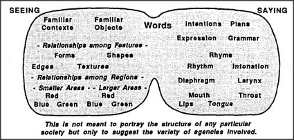

What possible kind of brain-event could correspond to anything like the meaning of an ordinary word? When you say red, your vocal cords obey commands from pronouncing agents in your brain, which make your chest and larynx muscles move to produce that special sound. These agents must in turn receive commands from somewhere else, where other agents respond to signals from yet other places. All those places must comprise the parts of some society of mental agencies.
It's easy to design a machine to tell when there is something red: start with sensors that respond to different hues of light, and connect the ones most sensitive to red to a central red-agent, making corrections for the color of the lighting of the scene. We could make this machine appear to speak by linking each color-agent to a device that pronounces the corresponding word. Then this machine could name the colors it sees — and even distinguish more hues than ordinary people can. But it would be a travesty to call this sight, since it's nothing but a catalog that lists a lot of colored dots. It would share no human notion of what colors come to mean to us, because without some sense of texture, form, and very much more, it would have few of the qualities of our human kinds of images and thoughts.
Of course no little diagram can capture more than a fragment of any real person's thoughts about the world. But this should not be taken to mean that no machine could ever have the range of sensibilities that people have. It merely means that we aren't simple machines; indeed, we should understand that in learning to comprehend the qualities of vast machines, we are still in the dark ages. And in any case, a diagram can only illustrate a principle: there cannot be any compact way to represent all the details of full-grown mind-society. To talk about such complex things, we can only resort to language tricks that make our listeners' minds explore the worlds inside themselves.